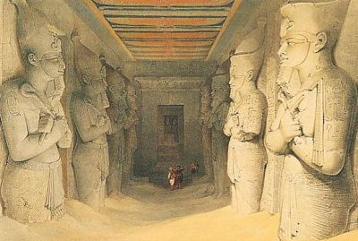

Le roi-prêtre, le temple : le roi intermédiaire entre les dieux et les hommes
Homme exerçant la fonction royale de droit divin, le pharaon joue, au moins en théorie, un rôle important sur terre. C’est lui, en effet, qui est chargé d’assurer l’Ordre universel conformément à Maât, déesse de la Vérité et de la Justice, enfant, comme lui, du dieu solaire Rê. Cette conception, typiquement égyptienne, tout en incluant les deux notions de vérité et de justice, recouvre bien davantage. Elle s’applique à l’ordre par excellence, établi par le démiurge lors de la création du monde. Si cet ordre, d’origine divine, venait à être perturbé, les forces du chaos, l’Isefet, pourraient alors se déchaîner à nouveau. Il est donc immuable et comprend aussi les mouvements des astres, le lever du soleil, le retour période de l’inondation, indispensable à la vie de l’Égypte, les rapports entre humains, les devoirs envers les dieux. La fonction essentielle de pharaon est de maintenir cet ordre. Tout d’abord, et surtout, il doit assurer le culte divin journalier dans l’ensemble de l’Égypte.
Ainsi, dans tous les temples du pays, le culte se fait au nom de pharaon et le clergé n’est que son délégué. Dans les scènes figurées des temples, c’est toujours le roi qui est représenté en accomplissant le rituel divin journalier.
Choisi par les dieux, pharaon est l’intermédiaire entre les dieux et les hommes. Les divinités l’ont désigné pour construire leurs temples, garnir leurs autels et leur réciter leurs prières. C’est pourquoi le souverain est le seul qui figure face aux divinités sur les murs des temples.
Pour pouvoir remplir ce rôle vital, le pharaon a besoin d’une force magique considérable. Certes, sa naissance divine est indispensable, mais elle ne suffit pas. Le surcroît de puissance nécessaire à sa fonction, il l’acquiert par les rites du couronnement, lorsqu’il prend les cinq noms de sa titulature. Puis, la puissance magique accumulée dans la personne de Pharaon grâce aux cérémonies religieuses du sacre a tendance à s’atténuer peu à peu, et après trente
ans de règne, une fête spéciale, la fête-sed — ou fête du jubilé royal — est destinée à redonner à pharaon la force qui s’est affaiblie au cours du règne. La fête-sed, célébrée à l’origine sous le patronage du dieu Ptah de Memphis, reprend, en partie du moins, les cérémonies du sacre. Le sens de la fête culmine par la double imposition des couronnes sur le pavillon d’apparition royale. Pour conclure le rituel jubilaire, le pharaon fournit la preuve de ses capacités physiques en effectuant une course. On s’est demandé si elle ne remplaçait pas un rite de l’Égypte primitive, au cours duquel le roi était mort rituellement lorsque, trop âgé, il ne pouvait plus assumer physiquement les charges de la royauté. La première fête-sed, célébrée après trente ans de règne, pouvait être suivie par d’autres, à intervalles plus courtes, chaque fois que le pharaon éprouvait le besoin de renouveler ses forces.

L’appropriation du monde : pharaon victorieux
Chef suprême de l’armée, le roi dirige en personne les expéditions militaires qui visent à repousser les invasions ou à conquérir de nouveaux territoires. Pour mater des révoltes et maintenir l’ordre, il délègue le plus souvent ses pouvoirs à ses généraux et aux commandants de garnison. Il définit la stratégie à adopter pour attaquer l’ennemi ou pour se défendre. Dès l’enfance, son éducation le prépare au métier des armes. Il apprend à tirer à l’arc, à manier l’épée, la lance et la hache, et à conduire un char.
Innombrables sont les textes et les représentations qui exaltent son rôle de chef de l’armée, durant lequel il exécute des prouesses étonnantes. À partir du Nouvel Empire, le thème du pharaon conquérant devient une scène métaphorique visent à mettre en avant la démonstration de la puissance des pharaons (topos). Ce thème fait partie de l’iconographie officielle de la royauté. À partir du Nouvel Empire, le temps des conquêtes commencement et une imagerie fut créée mettant en scène le pharaon sur son char vainqueur des ennemis.
L’armée devient une armée de métier à partir du Nouvel Empire (Thoutmosis III, Ramsès II). Ceci est dû à l’invasion de l’Égypte par des populations venues de Palestine méridionales que les Grecs ont appelées les Hyksôs (de l’expression égyptienne héqaou khasout
« les souverains des pays étrangers »). Cette première invasion étrangère du territoire fut traumatisante pout les Égyptiens, car selon l’idéologie, elle marquait le triomphe du chaos sur l’Ordre universel. Néanmoins, les Hyksos sont venus avec un armement perfectionné
en bronze (les armes locales étaient fabriquées en cuivre), le cheval et le char.

Le palais, siège du gouvernement
La Résidence est un ensemble architectural composé d’une partie officielle où siège le gouvernement, et d’une partie intime, le palais royal, constitutée des appartements privés de la famille royale et d’une partie de la cour. La partie officielle est marquée par des
salles d’audience et du trône dans lesquelles le pharaon affiche sa capacité à régner.
Le roi est le propriétaire de l’ensemble du pays (c’est la plus grosse fortune de l’Égypte). Il cède la jouissance d’une partie des terres aux temples, aux administrations
et à quelques grands dignitaires afin qu’ils pourvoient à leurs besoins et rémunèrent leurs employés. Le pharaon possède aussi les mines d’or, de cuivre et de pierres semi-précieuses et les carrières. Il envoie des expéditions les exploiter. C’est lui encore qui détient le monopole du commerce des matières premières avec l’étranger.
Chef du gouvernement, le pharaon s’entoure de ministres pour l’assister. Il délègue une partie de ses pouvoirs au vizir (sorte de ministre de l’Intérieur), personnage le plus éminent du pays après lui. Le conseil que préside le roi pour conduire les affaires du pays se compose aussi du directeur du Trésor — ou ministre de l’Intérieur —, et des directeurs des greniers et du bétail.
Recrutés d’avantage chez les scribes que les militaires, les fonctionnaires royaux constituent l’exécutif gouvernemental et sont les représentants de l’appareil administratif égyptien efficace.

Le palais en tant que résidence, la cour, la famille royale
La résidence royale est la partie privée du palais. Comme toutes les habitations, le palais où vit le roi est en briques crues. L’édifice se distingue des villas des dignitaires et des maisons des humbles par sa surface, beaucoup plus importante. Il possède aussi des éléments architecturaux en pierre, colonnes, seuils, montants et linteaux de porte. Couverts de pisé et d’enduits de stuc, ses murs sont parfois ornés de peintures inspirées de la nature.
A contrario des idées reçues, le harem n’était pas un lieu où les femmes demeuraient enfermées sans aucun contact avec l’extérieur, mais correspondait à la résidence où vivaient les reines, les princesses et les princes. L’un des plus fameux fut le harem de Gourob dans le Fayoum dont sa nécropole fut fouillée hâtivement. Le harem était aussi le lieu de production d’objets de toilette et de lin.
C’est à l’époque d’Amenhotep III que la vie est la plus
raffinée. La production du verre est une production de qualité. La verrerie est faite à proximité de la résidence royale. C’est aussi un monopole royal.
À l’époque amarnienne, le couple royal dévoile son intimité. Akhénaton et Néfertiti présentent l’image d’un foyer uni, proche des autres familles égyptiennes. Bien qu’il forme une couple aimant avec Néferiti, AmenhotepIV/Akhénaton a eu d’autres épouses, à commencer par la reine Kiya qui lui donna une fille. Après la mort de Néfertiti vers l’an 14 de son règne, le pharaon s’unit à deux de ses filles. C’est un exemple que suivra Ramsès II.
« Maât est grande et son action est permanente.
Elle n'a jamais été dans le trouble depuis le temps de son créateur…
Tandis qu'il y a punition pour qui transgresse ses lois. »
« Elle est le chemin devant l'inexpérimenté. »

Source : Christiane Ziegler, Pharaon.